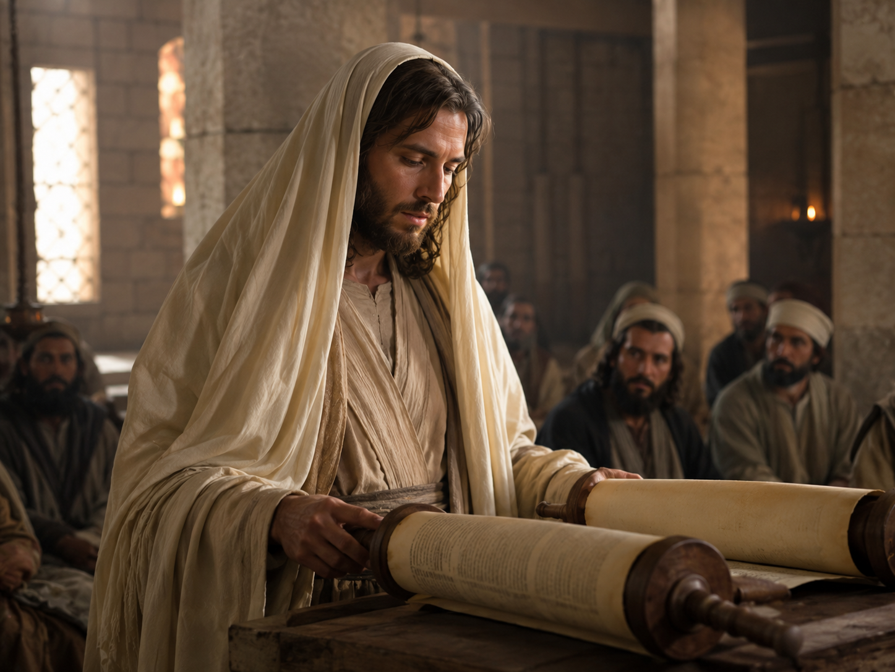
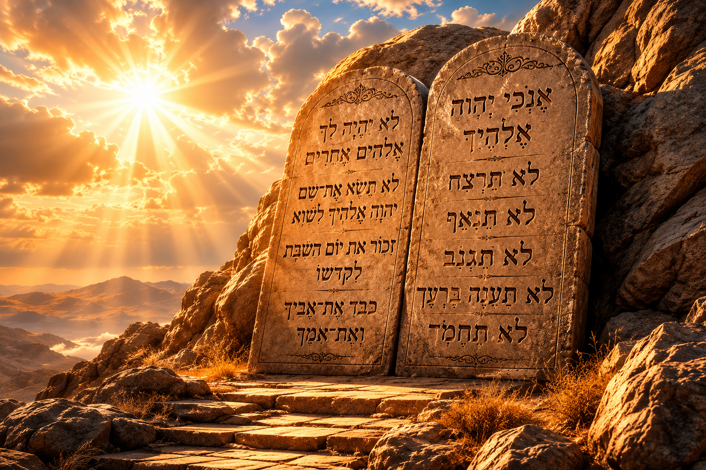

O dia em que o Criador descansou, abençoou e santificou — um sinal eterno do amor de Deus pela humanidade.
“Lembra-te do dia de sábado, para o santificar.” — Êxodo 20:8
No sétimo dia da Criação, Deus terminou a obra que fizera. Não porque estivesse cansado — Ele é o Eterno —, mas para presentear o ser humano com um espaço sagrado dentro do tempo. “Abençoou Deus o dia sétimo e o santificou” (Gênesis 2:3). Antes mesmo do pecado, antes do altar, antes do templo, existia o sábado.
O sábado nasceu no Éden, das mãos do próprio Criador, como um monumento vivo à origem de todas as coisas. Ele foi instituído para toda a humanidade — não apenas para um povo —, sendo o primeiro presente que Deus ofereceu ao homem: um dia inteiro de comunhão com Ele.
Séculos mais tarde, no Sinai, Deus formalizou esse dom no quarto mandamento da sua Lei eterna (Êxodo 20:8-11), recordando a humanidade da sua identidade: somos criaturas de um Criador amoroso.
“E havendo Deus acabado no dia sétimo a obra que fizera, descansou no sétimo dia de toda a sua obra, que tinha feito. E abençoou Deus o dia sétimo, e o santificou; porque nele descansou de toda a sua obra que Deus criara e fizera.”
Pelo próprio Deus Criador, na semana da Criação. Não foi instituição humana, nem de uma nação — é dom universal do Eterno para toda a humanidade.
No sétimo dia da semana da Criação (Gênesis 2:1-3), reafirmado séculos depois no Sinai como o quarto mandamento da Lei de Deus (Êxodo 20:8-11).
Para ser memorial da Criação, sinal de descanso físico e espiritual, e dia especial de adoração — lembrando que pertencemos a Deus, nosso Criador e Redentor.

O Evangelho registra com clareza o costume do Mestre: “Indo a Nazaré, onde fora criado; e entrou na sinagoga num dia de sábado, segundo o seu costume, e levantou-se para ler” (Lucas 4:16).
Jesus, o Senhor do sábado (Marcos 2:28), guardou o sétimo dia durante toda a sua vida terrena. Mais ainda — Ele descansou no sepulcro durante o sábado depois da cruz (Lucas 23:54-56), cumprindo perfeitamente o mandamento mesmo na morte.
Se Cristo é o nosso modelo, seguir Seus passos é também guardar o dia que Ele santificou.
“O Filho do homem é Senhor até do sábado.” — Marcos 2:28
Décadas após a ressurreição, os apóstolos e a igreja primitiva continuaram reunindo-se no sétimo dia para adorar a Deus.
Paulo e Barnabé entram na sinagoga de Antioquia da Pisídia “no dia de sábado” e pregam o evangelho.
Os gentios pedem que as mesmas palavras lhes sejam pregadas “no sábado seguinte”. “E no sábado seguinte ajuntou-se quase toda a cidade a ouvir a palavra de Deus.”
Em Tessalônica, “segundo o seu costume, Paulo foi ter com eles; e por três sábados disputou com eles sobre as Escrituras.”
Em Corinto, “e todos os sábados disputava na sinagoga, e persuadia a judeus e gregos.”
Não há, em toda a Escritura, mandamento que transfira a santidade do sábado para outro dia da semana. A igreja primitiva continuou fiel ao quarto mandamento.
O sábado não termina nesta vida. Ele atravessa o tempo e continua na eternidade. O profeta Isaías descreve a adoração dos salvos na Nova Terra:
“E acontecerá que, de uma lua nova à outra, e de um sábado ao outro, virá toda a carne a adorar perante mim, diz o Senhor.” — Isaías 66:22-23
Assim como começou no Éden, o sábado terminará no Éden restaurado. Cada sábado guardado hoje é um pequeno ensaio da adoração que faremos eternamente diante do trono de Deus.

O sábado é muito mais que um dia: é um sinal. Sinal de quem é o nosso Deus, e sinal de quem somos nós.
“E santificai os meus sábados, e servirão de sinal entre mim e vós, para que saibais que eu sou o Senhor vosso Deus.” — Ezequiel 20:20
Ele aponta para Deus como nosso Criador (Êxodo 20:11), nosso Redentor (Deuteronômio 5:15) e nosso Santificador (Êxodo 31:13). É o emblema visível da nossa entrega ao Senhor, lembrando-nos semanalmente de que pertencemos a Ele.
Guardar o sábado é declarar ao universo: “O Senhor é o meu Deus.”
O profeta Isaías traçou um retrato delicado do verdadeiro guardador do sábado — aquele que o vê não como peso, mas como delícia.
Na sexta-feira, “dia da preparação” (Lucas 23:54), arrumamos a casa, preparamos a comida e o coração, encerrando os trabalhos da semana antes do pôr do sol.
O sábado bíblico começa na sexta ao entardecer e termina no sábado ao entardecer (Levítico 23:32; Marcos 1:32), recebido em família com oração e cânticos.
Reunir-se com a igreja para estudo da Palavra, louvor e oração — “uma santa convocação” (Levítico 23:3).
Cessar o trabalho secular e os negócios próprios, descansando como Deus descansou na Criação (Êxodo 20:10).
Visitar enfermos, consolar tristes, ajudar o próximo — “é lícito fazer o bem nos sábados” (Mateus 12:12), seguindo o exemplo de Jesus.
Contemplar a obra do Criador em caminhadas, observação da natureza e momentos em família — admirando a sabedoria de Deus revelada na criação.
A Palavra é generosa nas promessas para quem chama o sábado de “deleitoso, e o santo dia do Senhor, digno de honra” (Isaías 58:13):
“Então te deleitarás no Senhor” — a comunhão com Deus se torna a maior alegria da vida.
“Eu te farei cavalgar sobre as alturas da terra” — vitória sobre o mundo e crescimento na fé.
“Te sustentarei com a herança de teu pai Jacó” — partilhar das bênçãos do reino eterno.
Renovação do corpo, da mente e do espírito — Deus sabia que precisaríamos pausar.
Um dia inteiro reservado para fortalecer laços familiares à luz do altar doméstico.
A última mensagem de Deus ao mundo, registrada em Apocalipse 14:6-12, é o convite a “adorar aquele que fez o céu, e a terra, e o mar, e as fontes das águas” — uma referência direta ao quarto mandamento (Êxodo 20:11). O sábado, portanto, será o sinal distintivo do povo fiel nos últimos dias.
Em meio a uma geração que esqueceu o Criador, guardar o sábado é proclamar silenciosamente: “Eu pertenço a Deus.”
Em Gênesis 1, cada dia da criação termina com a frase: “e foi a tarde e a manhã”. Para o Deus que criou o tempo, o dia começa quando o sol se põe — e assim o sábado se inicia na sexta-feira ao entardecer e termina no sábado ao entardecer (Levítico 23:32).
O sábado é um presente bom demais para se guardar só para si. Conte a um amigo o que descobriu: que existe um dia separado pelo próprio Deus para a humanidade descansar nEle.
Fale do Criador que terminou Sua obra e a chamou de “muito boa”. Fale de Jesus, que guardou o sétimo dia mesmo no sepulcro. Fale dos apóstolos, que continuaram fiéis ao quarto mandamento. E fale da Nova Terra, onde toda carne adorará ao Senhor de um sábado ao outro.
Conte como o sábado pode transformar uma semana cansada em uma vida com propósito. Como ele restaura famílias, alimenta a alma e aponta para o Cordeiro que em breve voltará.
E lembre-se da promessa de Isaías 58:14 — quem honra o sábado herda “as alturas da terra” e a bênção do Deus de Jacó. Esse é o convite que o desbravador faz ao amigo: “Vem descansar em Jesus, todo sábado, e para sempre.”